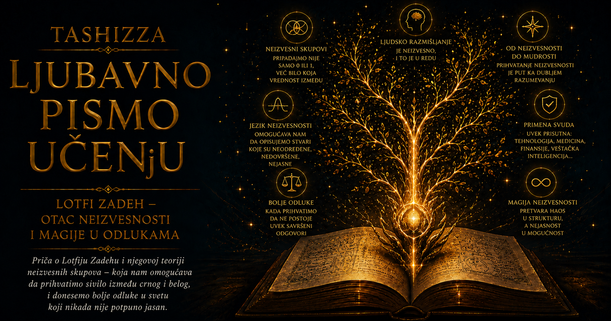

Ljubavno pismo učenju

Ljudski um voli jasne granice jer one svetu daju privid reda. Tvrdnja je tačna ili netačna, predmet pripada određenoj grupi ili ostaje izvan nje, svetlo je uključeno ili ugašeno, odluka ispravna ili pogrešna. Na takvim razgraničenjima izgrađeni su formalna logika, klasična teorija skupova i veliki deo digitalnog računarstva. Njihova pouzdanost počiva na strogoj podeli: svaki element dobija vrednost jedan kada pripada skupu i nulu kada mu ne pripada. Taj jezik savršeno odgovara problemima čije su granice prirodno oštre, poput razlikovanja parnih i neparnih brojeva ili određivanja da li je električno kolo zatvoreno.
Stvarnost kojom se svakodnevno krećemo mnogo češće nastaje u prelazima. Čovek od 179 centimetara ne menja prirodu čim poraste još jedan centimetar, kao što voda zagrejana sa 24,9 na 25 stepeni ne prelazi čudesnim skokom iz hladne u toplu. Pojmovi poput mlad, visok, brz, pouzdan, skup, bezbedan ili gotovo prazan imaju značenje koje razumemo, iako njihove ivice ne možemo obeležiti jednom neospornom tačkom. Jezik je tokom vekova razvio izraze za tu postepenost: pomalo, prilično, veoma, skoro, uglavnom, približno. U njima se nalazi sabijeno ljudsko iskustvo, sposobno da prepozna razliku između nijansi bez potrebe da svaku od njih pretvori u zasebnu kategoriju.
Lotfi Zadeh je sredinom dvadesetog veka uočio dubok raskorak između formalnih sistema i složenog sveta koji su pokušavali da opišu. Što su se nauka o upravljanju, automatika i računarstvo više približavali procesima u kojima učestvuju ljudi, promenljiva okruženja i nepotpuno znanje, to je zahtev za savršeno oštrim granicama postajao manje uverljiv. Iskusni operater mogao je proceniti da je pritisak prilično visok, da temperatura blago raste i da ventil treba još malo zatvoriti. Njegovo znanje bilo je praktično, provereno i dragoceno, ali se teško prevodilo u jednačine i nizove strogih pragova. Čovek je umeo da rasuđuje u gradacijama, dok je formalni sistem od njega tražio isključivo nulu ili jedinicu.
Zadeh je 1965. godine u radu „Fuzzy Sets” predložio matematički jezik za pojmove čije granice ostaju postepene. U klasičnom skupu svaki element nalazi se potpuno unutra ili potpuno izvan njega, dok u rasplinutom skupu može pripadati sa određenim stepenom izraženim vrednošću između nule i jedinice. Neka visina može slabo, umereno ili snažno odgovarati pojmu „visok”, kao što neka temperatura može istovremeno delimično pripadati opisima „prijatna” i „topla”. Time svakodnevne reči nisu dobile jednu zauvek propisanu definiciju, već formalnu strukturu pomoću koje se njihova postepenost može predstavljati, porediti i uključivati u zaključivanje.
Stepen pripadnosti ne govori koliko je verovatno da određeni predmet pripada skupu. Ako znamo da čovek ima 185 centimetara, njegova visina nije nepoznata, ali pojam „visok” i dalje nema granicu koju svi ljudi u svakom kontekstu moraju jednako prihvatiti. Verovatnoća opisuje neizvesnost ishoda, kao kada procenjujemo kolika je mogućnost da će sutra padati kiša. Rasplinutost opisuje postepenost značenja, kao kada poznatu temperaturu nazivamo prilično toplom. Dve vrste neizvesnosti mogu se susresti u istom problemu, ali odgovaraju na različita pitanja i zahtevaju različite načine predstavljanja.
Zadehova zamisao sačuvala je matematičku disciplinu, a proširila prostor u kojem se ona može primeniti. Rasplinuti skup opisuje se funkcijom pripadnosti koja svakom elementu dodeljuje odgovarajući stepen, nakon čega se nad takvim skupovima mogu definisati preseci, unije, dopune i pravila zaključivanja. Izrazi prirodnog jezika, poput „temperatura je visoka” ili „rastojanje je veoma kratko”, tako postaju delovi formalnog sistema. Reči više ne ostaju izvan računanja kao nedovoljno precizan dodatak, već ulaze u model sa jasno određenim odnosima i posledicama.
Posebnu važnost dobio je Zadehov pojam jezičke promenljive. Brojčana promenljiva uzima vrednosti poput 18, 25 ili 32 stepena, dok jezička promenljiva može imati vrednosti „hladno”, „prijatno”, „toplo” i „veoma toplo”. Svaka od tih reči označava rasplinuti skup, a njihovo preklapanje odgovara iskustvu prema kojem jedna temperatura može istovremeno biti pomalo prijatna i pretežno topla. Takve promenljive omogućile su približno zaključivanje pomoću pravila koja liče na ljudska uputstva: ako je put veoma klizav, a brzina prilično velika, rizik je visok. Matematički sistem time dobija mogućnost da radi sa znanjem izraženim onako kako ga ljudi često stvarno prenose.
Ova ideja promenila je predstavu o preciznosti. Precizan model može biti savršeno izračunat, a ipak slabo odgovarati pojavi čije je granice veštački zaoštrio. Zadeh je ukazivao da sa porastom složenosti sistema opada mogućnost da tvrdnje o njemu istovremeno budu krajnje precizne i sadržajno veoma značajne. U složenim društvenim, biološkim i tehničkim procesima približan opis ponekad čuva više stvarnog znanja nego egzaktan broj izveden iz nepouzdanih pretpostavki. Naučna ozbiljnost tada se ogleda u izboru preciznosti koju predmet zaista može da podnese.
Fazi logika ne pruža opravdanje za proizvoljnost. Funkcije pripadnosti, pravila i značenja jezičkih izraza mora neko pažljivo oblikovati na osnovu stručnog znanja, podataka, merenja i provere. Pojam „visok rizik” može se razlikovati među medicinom, finansijama i industrijskom bezbednošću, kao što se značenje reči „skupo” menja sa vremenom, mestom i životnim okolnostima. Rasplinuti model omogućava da se takve razlike učine vidljivim, ali sam ne odlučuje čije će merilo biti prihvaćeno. Njegova pouzdanost zavisi od kvaliteta pretpostavki i načina na koji je ispitan u stvarnim uslovima.
Jasne granice ostaju nezamenljive tamo gde ih zahteva priroda zadatka. Matematički dokaz mora zadovoljiti određena pravila, tehnički standard mora imati proverljive uslove, a pravna odluka često zahteva nedvosmislen ishod. Rasplinuto zaključivanje najveću vrednost pokazuje kada je predmet već po svojoj prirodi postepen i kada oštra podela skriva podatke važne za razumevanje. Njegova snaga zato počiva na izboru odgovarajućeg problema, a ne na pokušaju da svaku razliku u svetu pretvori u stepen.
U obrazovanju ova misao pomaže da učenika ne zatvorimo u jednu oznaku. On može dobro razumeti ideju, a još nesigurno primenjivati postupak; može pokazivati stvaralačku smelost dok mu nedostaje sistematičnost; može snažno napredovati iako još nije dostigao propisani nivo. Ocena zahteva odluku, ali odluka postaje pravednija kada pre nje vidimo slojeve razumevanja, truda i razvoja. Slično važi za medicinu, poslovanje i odnose među ljudima, gde jedna kategorička presuda često skriva osobine koje se kreću različitim pravcima i različitim brzinama.
Zadehova ideja pružila je matematičko dostojanstvo nijansama koje su ranije lako proglašavane znakom neurednog mišljenja. Pokazala je da postepenost može imati strukturu, da se nejasno omeđeni pojmovi mogu pažljivo modelovati i da približnost može biti disciplinovana. Zahvaljujući tom uvidu, između apsolutnog prihvatanja i potpunog odbacivanja otvoren je širok prostor za razumevanje stepena, konteksta i prelaza.
Za kulturu učenja taj prostor ima naročitu vrednost. Znanje najčešće ne dolazi kao trenutni prelazak iz neznanja u potpunu sigurnost, već sazreva kroz sumnju, pokušaje, ispravke i postepeno povezivanje. Čovek može nešto naslutiti pre nego što ume da objasni, razumeti deo problema pre celine i promeniti mišljenje bez odricanja od svega što je ranije naučio. Zreo um ne gubi jasnoću kada prizna nijanse; on postaje precizniji prema stvarnosti i skromniji prema granicama sopstvenih pojmova.